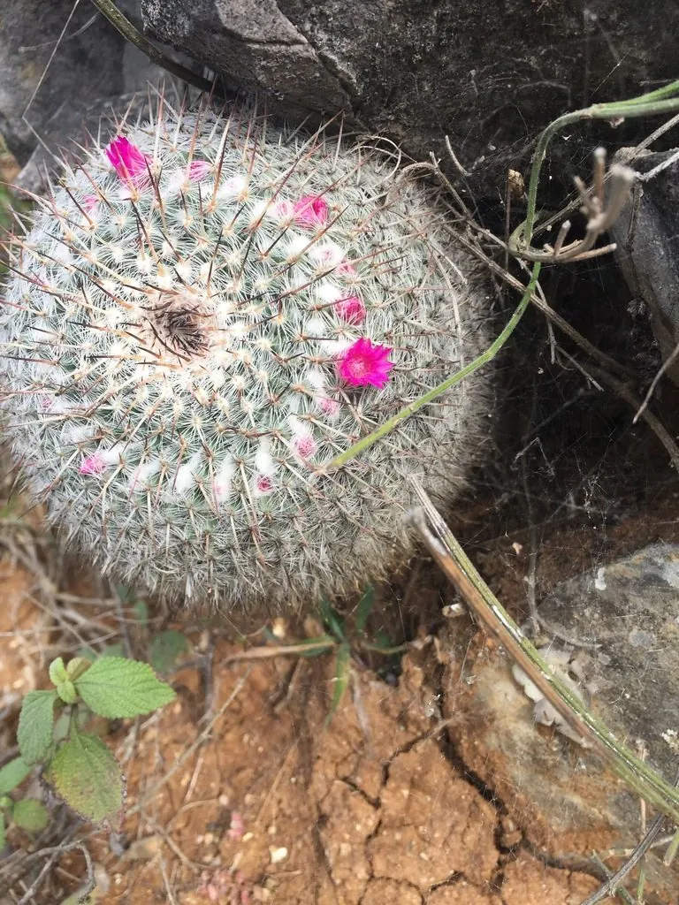

多肉植物 · 植物界
玉翁 Mammillaria hahniana

仙人掌科乳突球属球状多肉，球体密被白色软毛，顶生一圈粉红色小花，像戴着花环的老翁，原产墨西哥，十分耐旱。
- 分类
- 门被子植物门纲木兰纲目石竹目科仙人掌科属乳突球属
- 栖息环境
- 墨西哥中部干旱山地的石缝与砾石坡，喜光、耐旱
- 地理分布
- 原产墨西哥中部，世界各地盆栽观赏
- 保护级别
- 暂无评估；CITES 附录Ⅱ（仙人掌科）
物种志
玉翁为仙人掌科乳突球属的球状多肉植物，球体单生或群生，直径 8–10 厘米，高约 8 厘米，表面有螺旋状排列的乳突。乳突腋部密生白色长毛，刺座上的白刺细密，使整个球体像裹了一层白绒。花小，紫红色或粉红色，直径约 1.5 厘米，围绕球体顶部开放，花期春季至初夏；果实为棒状浆果，藏在白毛中。
玉翁原产墨西哥中部的干旱山地，喜阳光充足、温暖干燥和通风良好的环境，耐旱、怕涝，冬季需保持 5℃ 以上。它球体圆整、白毛浓密，开花时顶部一圈粉花宛如花环，是仙人球中最受欢迎的品种之一。栽培用颗粒土，生长期干透浇透，避免水淋球体；繁殖以播种为主，也可切取侧芽扦插。野生种群因采挖和生境破坏而下降，应选择人工繁殖个体。
形态与习性
- 球径直径 8–10 厘米，高约 8 厘米
- 花期春季至初夏，花紫红色，环绕球顶
- 光照喜充足阳光，夏季正午适当遮阴
- 水分耐旱，干透浇透，忌水淋球体
- 土壤排水良好的颗粒土，含少量石灰质
- 繁殖播种为主，也可切取侧芽扦插
- 耐寒冬季需保持 5℃ 以上
- 主要用途室内盆栽、仙人球收藏
趣味知识
- 玉翁球体顶部的白毛能反射强光、减少水分蒸发。
- 它开花时粉红色小花围成一圈，像给老翁戴上花环，因此得名。
- 玉翁的刺被白色软毛覆盖，摸起来比多数仙人球柔和。